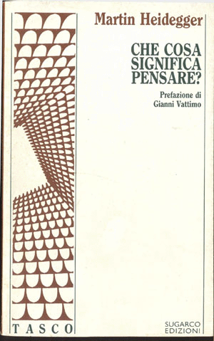
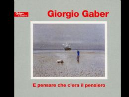
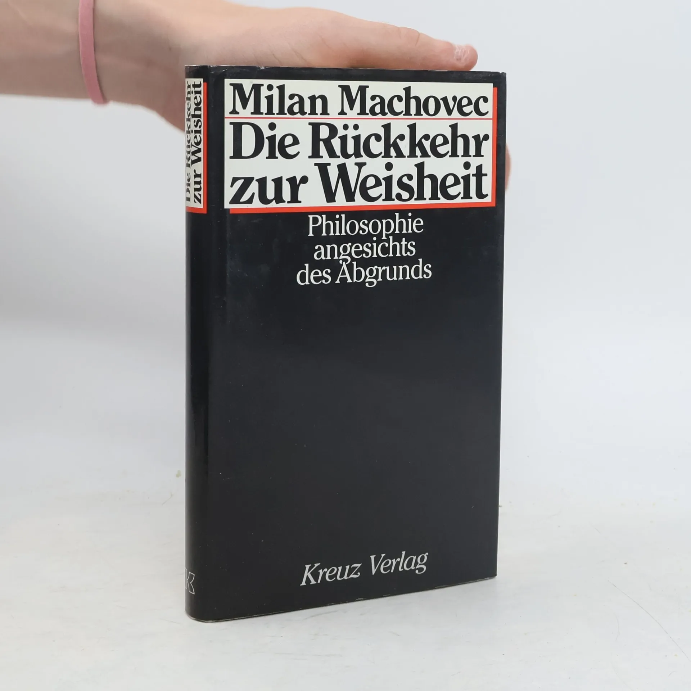
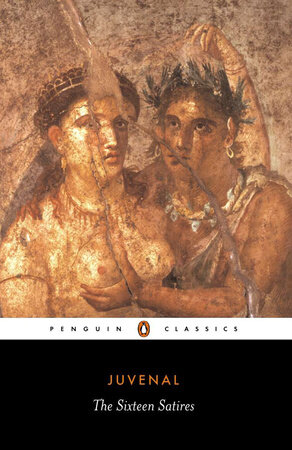
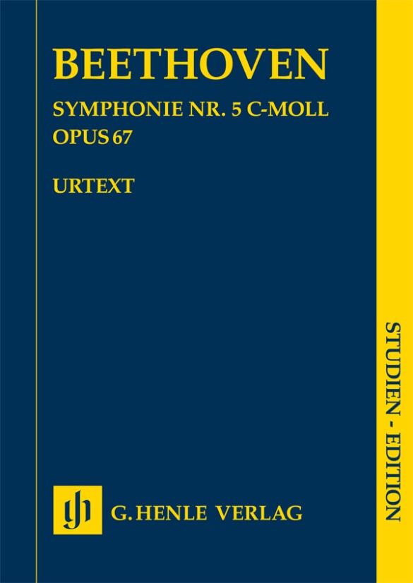
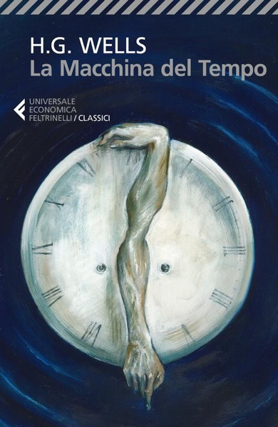
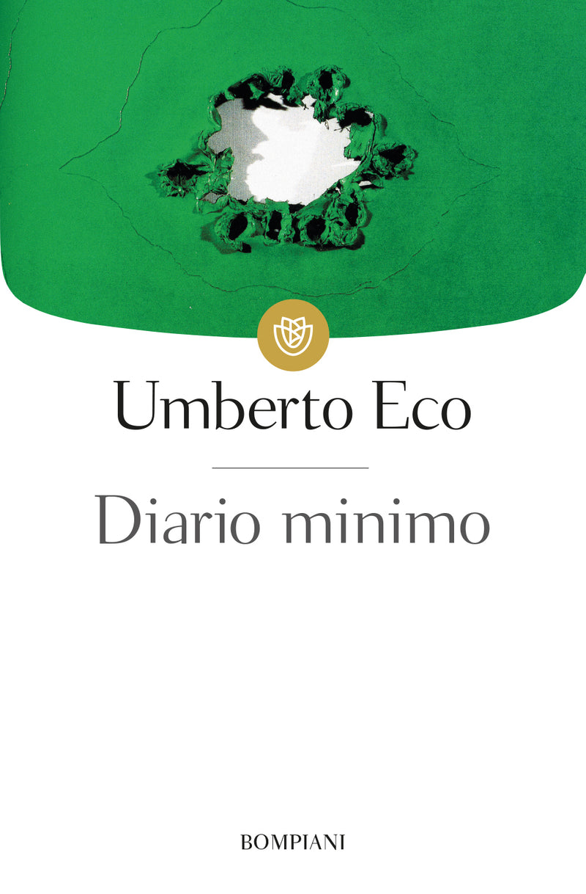
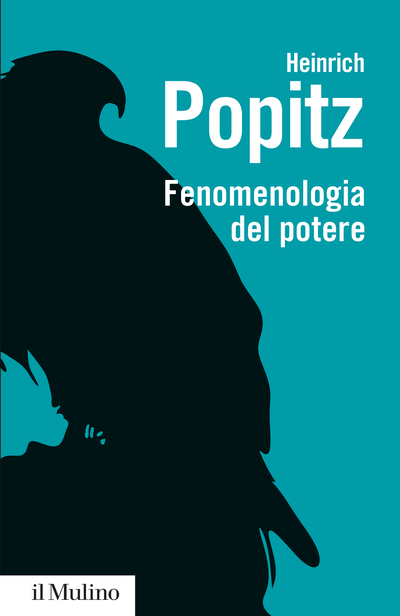

59:32 · 14 OPERE
Le conseguenze del tramonto del significato nella modernità.
Il filo del discorso
Dr Divago affronta il tema del significato nella modernità a partire da una critica dei comportamenti durante la pandemia. La sua cornice politica e le etichette rivolte ai cittadini restano attribuite, senza trasformarsi in diagnosi o in smentite delle evidenze sanitarie. Che cosa significa pensare? di Heidegger e una canzone di Gaber introducono la distanza fra attività quotidiane e autentico esame del mondo. Il riferimento centrale è Die Rückkehr zur Weisheit di Milan Machovec: la riflessione sulla razionalità, sull’ambiente e sui rischi collettivi conduce alla figura dell’uomo che protegge la propria tranquillità evitando le domande più impegnative. Il tabù della morte, la Quinta di Beethoven e gli Eloi della Macchina del tempo danno forma a questa interpretazione. La critica dell’immagine e il richiamo alla Settima lettera di Platone sviluppano poi l’idea della cultura come responsabilità comune. Eco, Popitz e Reich introducono altre prospettive sul potere e sulla personalità. La parte finale discute Jung, Freud, Frankl e il significato ridotto a cose e traguardi, passando per Petrarca e Il caso e la necessità di Monod. Sono argomenti filosofici del relatore, non spiegazioni cliniche complete del comportamento collettivo. Il richiamo al Trionfo della volontà porta all’Apologia di Socrate e alla difesa di una vita che si esamina. La scheda distingue i riferimenti musicali confusi nel parlato, corregge alcuni elementi biografici su Machovec e segnala la sovrapposizione fra il discorso processuale dell’Apologia e la vicenda della fuga nel Critone.
I libri nel discorso

Che cosa significa pensare?
Copertina: SugarCo · Tasco · edizione di riferimento
Titolo tedesco Was heißt Denken? e Heidegger espliciti; lettura e traduzione personale.
Passaggio 5:03 ↗ · Fonti e libro ↗
E pensare che c’era il pensiero
Copertina dell’album: Copertina dell’album omonimo, stagione 1995/1996, conservata dalla Fondazione Gaber; la canzone è nella seconda parte.
Immagine autentica dell’album omonimo dalla Fondazione Gaber, con scena sulla spiaggia e titolo leggibile. La voce riguarda la canzone; la copertina illustra il supporto che la contiene, non un libro né un documento autonomo del testo.
Gaber e formula del titolo espliciti nel richiamo alla canzone.
Passaggio 7:39 ↗ · Fonti e libro ↗
Die Rückkehr zur Weisheit. Philosophie angesichts des Abgrunds
Fotografia della sovraccoperta: Kreuz Verlag, Stuttgart 1988, 240 pagine, ISBN 9783783109030; fotografia dell’esemplare con sovraccoperta.
Fotografia autentica della sovraccoperta nera Kreuz 1988, con parte della mano del venditore nell’inquadratura originale. Titolo, autore e sottotitolo leggibili. Il video indica un’edizione tedesca 1988 ma non permette di certificare lo stesso esemplare o la tiratura.
Machovec, titolo tradotto e sottotitolo, anno 1988 espliciti nel presentare il volume tedesco.
Passaggio 15:27 ↗ · Fonti e libro ↗
Satira I, dalle Satire
Identificazione probabile
Copertina della raccolta: COPERTINA DELLA RACCOLTA The Sixteen Satires, Penguin Classics, 1 febbraio 1999, 320 pagine, traduzione, introduzione e note di Peter Green, ISBN 9780140447040. La Satira I è contenuta nella raccolta completa, non pubblicata in questo volume come opera autonoma.
Copertina autentica Penguin Classics 1999 della raccolta completa The Sixteen Satires, contenente anche la Satira I. L’immagine rappresenta la raccolta, che comprende anche la Satira X; non è una pubblicazione autonoma né l’edizione identificata nel video.
Motto latino riportato attraverso Machovec; identificazione probabile con Satira I30, autore non nominato.
Passaggio 16:18 ↗ · Fonti e libro ↗
Sinfonia n. 5 in do minore, op. 67
Copertina della partitura: Partitura di studio Henle Urtext, HN9813, a cura di Jens Dufner, ISMN 9790201898131.
Copertina autentica della partitura Henle Urtext della Sinfonia n. 5 op. 67, edizione per studio a cura di Jens Dufner. Non è una copertina discografica e non corrisponde a una registrazione identificata nel video.
Quinta sinfonia esplicita e motivo iniziale riprodotto vocalmente; il motto Muss es sein appartiene invece ad altra opera.
Passaggio 25:33 ↗ · Fonti e libro ↗
La macchina del tempo
Copertina: Feltrinelli · Universale Economica, I classici
Wells e La macchina del tempo espliciti, con Eloi e Morlock.
Passaggio 27:24 ↗ · Fonti e libro ↗
Settima lettera
Copertina: Carocci · Classici · 2020, ristampa 2024 · a cura di Filippo Forcignanò
Immagine autentica dell’opera, controllata visivamente; l’edizione di riferimento non è attribuita al filmato.
Platone, Siracusa e Settima lettera espliciti.
Passaggio 33:19 ↗ · Fonti e libro ↗
Fenomenologia di Mike Bongiorno
Copertina della raccolta Diario minimo che contiene il saggio: Copertina della raccolta Diario minimo, Bompiani, ISBN 9788845274886; catalogo Giunti:12 marzo 2001,160 pagine. Il record Braidense descrive la18a edizione 2013 con153 pagine. Si dichiara la divergenza fra catalogazioni e ristampe; la copertina è quella attualmente associata al titolo dall’editore. La raccolta uscì nel 1963.
Fenomenologia di Mike Bongiorno è un breve saggio della raccolta, non un autonomo libro su Bongiorno. L’ISBN e la copertina sono della raccolta.
Umberto Eco e Fenomenologia di Mike Bongiorno espliciti nella polemica sul titolo.
Passaggio 38:02 ↗ · Fonti e libro ↗
Fenomenologia del potere. Autorità, dominio, violenza, tecnica
Copertina: il Mulino, Biblioteca paperbacks, 2015, 216 pagine, ISBN 9788815254788.
Immagine autentica dell’opera, ispezionata integralmente; l’edizione illustrata non è attribuita al filmato.
Autore Popitz e titolo Fenomenologia del potere espliciti.
Passaggio 39:03 ↗ · Fonti e libro ↗Ascolta, piccolo uomo
Copertina: SugarCo · Tasco, Scienze umane · 1996
Copertina autentica dell’edizione di riferimento, controllata visivamente. Non identifica l’esemplare letto o citato nel video.
Reich e Ascolta, piccolo uomo espliciti.
Passaggio 39:53 ↗ · Fonti e libro ↗
Voglia mi sprona, Amor mi guida et scorge (Rvf 211)
Identificazione probabile
Copertina della raccolta: Feltrinelli, Universale Economica Classici, 2013
Copertina autentica del Canzoniere, Feltrinelli 2013, che contiene il sonetto Rvf 211. L’immagine rappresenta la raccolta; non è una pubblicazione autonoma del sonetto né un’edizione attestata nel video.
Petrarca esplicito e verso Rvf 2117; titolo del sonetto non pronunciato.
Passaggio 43:58 ↗ · Fonti e libro ↗Il caso e la necessità. Saggio sulla filosofia naturale della biologia contemporanea
Copertina: Mondadori, Nuovi Oscar Saggi, 25 novembre 2022, traduzione Anna Busi, 204 pagine, ISBN 9788804772309.
Copertina autentica Mondadori 2022 con disegno di nastri bianchi e neri su fondo corallo. È un’edizione successiva al contesto pandemico del contributo e non viene attribuita al volume posseduto dal relatore.
Jacques Monod e Il caso e la necessità espliciti.
Passaggio 46:43 ↗ · Fonti e libro ↗
Apologia di Socrate
Copertina del volume Apologia di Socrate. Critone: BUR · Apologia di Socrate. Critone · a cura di Maria Michela Sassi, 1993
Copertina autentica del volume BUR contenente Apologia di Socrate e Critone. Il secondo titolo non è aggiunto come citazione del video; l’autore del testo è Platone, con Socrate come figura protagonista.
Apologia di Socrate esplicita, poi localizzazione38a e lettura greca.
Passaggio 46:51 ↗ · Fonti e libro ↗
Il trionfo della volontà (Triumph des Willens)
Fotografia archivistica del film: Il trionfo della volontà: Fotografia archivistica della scena di Norimberga, galleria DFF/filmportal, fonte DFM. Non è una copertina libraria né una locandina.
Immagine della scena di Norimberga conservata nella galleria museale del film, con fonte DFM. Usata come documento storico del film di propaganda; non è la copertina di un libro o una locandina.
Titolo del documentario e Riefenstahl espliciti nel discorso suvolontà e significato.
Passaggio 52:22 ↗ · Fonti e libro ↗